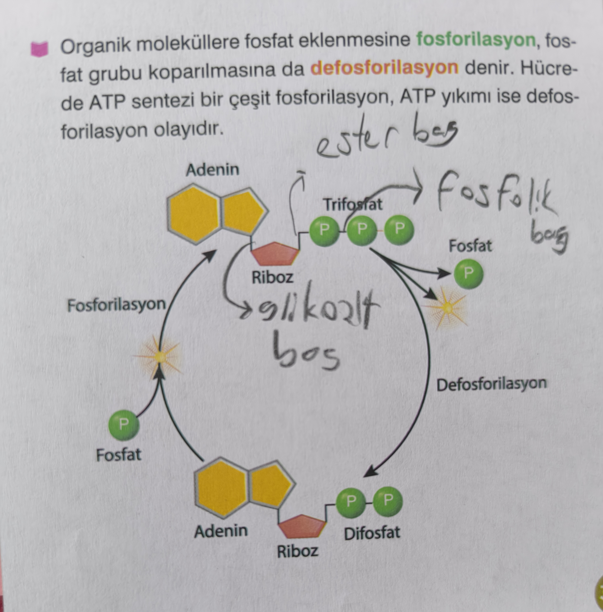
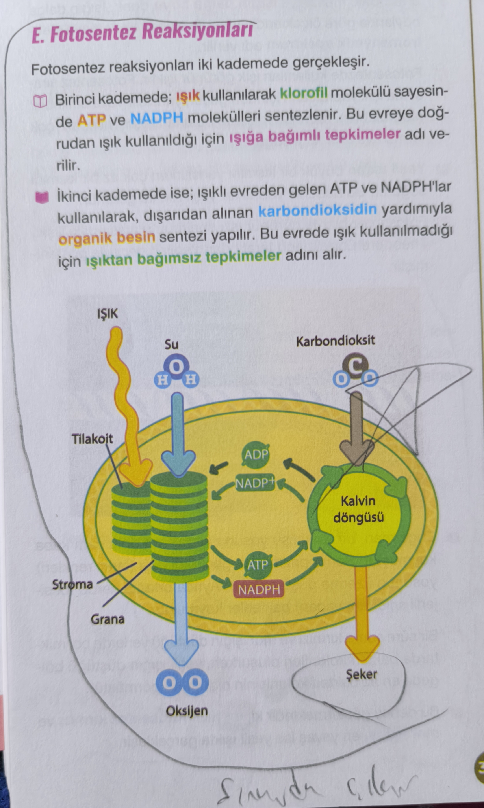
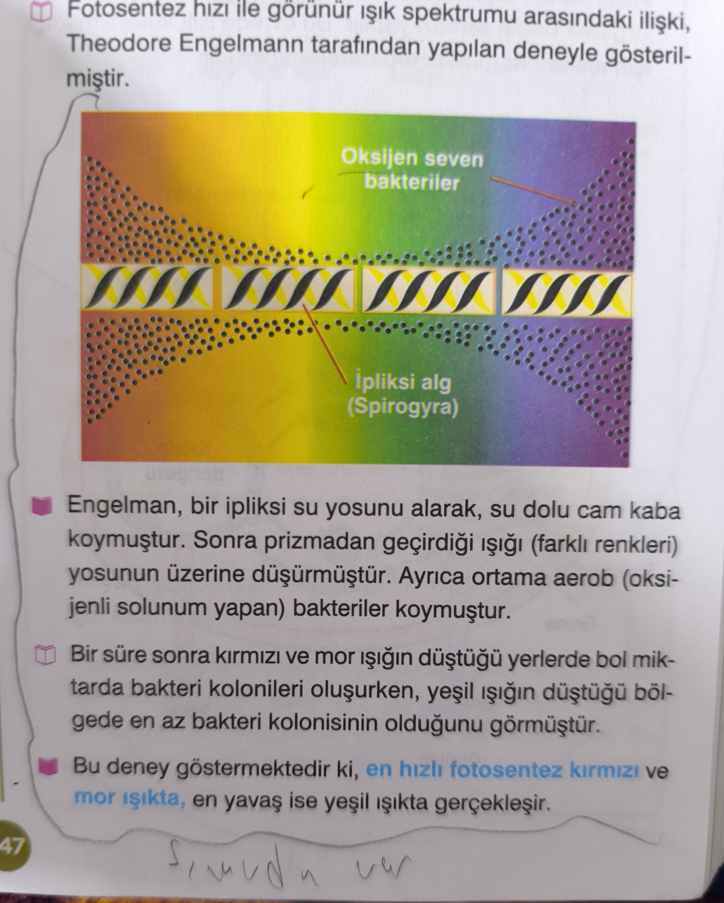
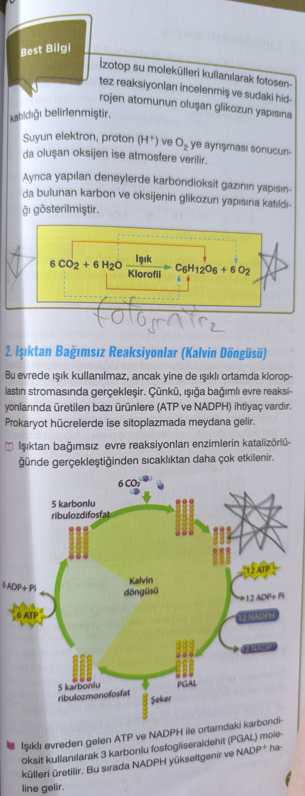
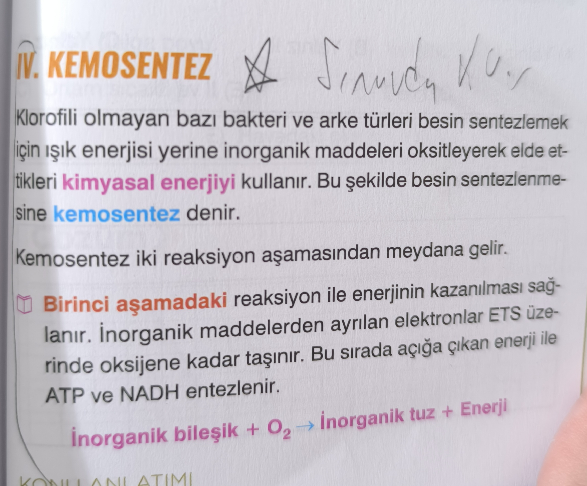

Canlılığın devamı için enerji
Enerjinin neden gerekli olduğu ve ATP’nin temel rolü sorulabilir.
Eksiksiz dijital çalışma alanı
Gönderdiğin görsellerdeki tüm bilgiler; ATP, fotosentez, Kalvin döngüsü, kemosentez, hücresel solunum ve fermantasyon başlıkları altında yeniden düzenlendi. Site PWA olarak çalışır, offline açılır, mobilde ve masaüstünde eksiksiz görünür.
Sınav kapsamı
Enerjinin neden gerekli olduğu ve ATP’nin temel rolü sorulabilir.
Şemalar, ışığa bağımlı-bağımsız evreler, Engelmann ve Kalvin döngüsü.
Kemosentezin tanımı, iki aşaması ve örnek bakteriler.
Oksijenli ve oksijensiz solunumun temel çalışma mantığı.
Biri diğerinin hammaddesini oluşturur; dönüşümler üzerinden yorum yapılır.
Enerji temeli
Organik moleküllere fosfat eklenmesine fosforilasyon, fosfat grubunun koparılmasına ise defosforilasyon denir. Hücrede ATP sentezi bir fosforilasyon olayıdır; ATP’nin parçalanması ise defosforilasyondur.
Adenin + riboz + 3 fosfat = ATP (adenozin trifosfat)
Adenin + riboz + 2 fosfat = ADP (adenozin difosfat)
ADP + Pi + enerji → ATP
ATP → ADP + Pi + enerji

En kritik konu
Işık kullanılır, klorofil görev yapar, tilakoit zarlarında gerçekleşir. ATP ve NADPH üretilir; su parçalanır ve oksijen açığa çıkar.
Doğrudan ışık kullanılmaz; stromada gerçekleşir. Işıklı evreden gelen ATP ve NADPH ile karbondioksitten organik besin sentezlenir.
CO₂, 5 karbonlu ribulozdifosfat ile döngüye katılır; ATP ve NADPH harcanır, PGAL oluşur, sonunda şeker sentezlenir.
Engelmann deneyi fotosentez hızının kırmızı ve mor ışıkta arttığını, yeşilde ise en düşük olduğunu gösterir.

6 CO₂ + 6 H₂O — Işık / Klorofil → C₆H₁₂O₆ + 6 O₂
Işığa bağımlı: tilakoit | Işıktan bağımsız: stroma
Theodore Engelmann; ipliksi algi (Spirogyra) ve aerob bakterileri kullanarak fotosentez hızı ile görünür ışık spektrumu arasındaki ilişkiyi göstermiştir.
En hızlı fotosentez kırmızı ve mor ışıkta, en yavaş fotosentez yeşil ışıkta gerçekleşir.

Atmosfere verilen O₂’nin kaynağı sudur; glikozun karbon kaynağı ise CO₂’dir.

Yeni eklenen konu
Klorofilli olmayan bazı bakteri ve arke türleri, besin sentezlemek için ışık yerine inorganik maddeleri oksitleyerek elde ettikleri kimyasal enerjiyi kullanır. Bu şekilde besin sentezlenmesine kemosentez denir.
İnorganik maddelerden ayrılan elektronlar ETS üzerinden oksijene taşınır; ATP ve NADH sentezlenir.
ATP ve NADH kullanılarak CO₂ indirgenir, organik besin sentezlenir.
Sentez sırasında açığa çıkan oksijen enerji üretiminde kullanılır.
Bazı bakteri ve arkeler; bitkiler ve hayvanlar kemosentez yapmaz.
CO₂ + H₂O → organik besin + O₂
İnorganik bileşik + O₂ → inorganik tuz + enerji

2 NH₃ + 3 O₂ → 2 HNO₂ + 2 H₂O + enerji
2 HNO₂ + O₂ → 2 HNO₃ + enerji
2 H₂S + O₂ → 2 H₂O + 2 S + enerji
4 FeCO₃ + O₂ + 6 H₂O → 4 Fe(OH)₃ + 4 CO₂ + enerji
Eski içerik korundu
Organik besin monomerlerinin enzimler yardımıyla inorganik bileşiklere kadar parçalanmasıdır. Daha çok ATP ve daha çok ısı enerjisi açığa çıkar.
Bazı bakteriler, oksijen kullanmadan Krebs ve ETS yardımıyla enerji üretebilir. Son elektron alıcısı nitrat, sülfat, kükürt, karbondioksit ve demir gibi maddeler olabilir.
ETS kullanılmadan, glikoliz sonucu oluşan pirüvik asidin farklı son ürünlere dönüşmesiyle NAD⁺ yenilenir ve az miktarda enerji üretimi sürer.


Kafa karışıklığını bitir
Kaynak alanı
Kendini dene
Son tekrar